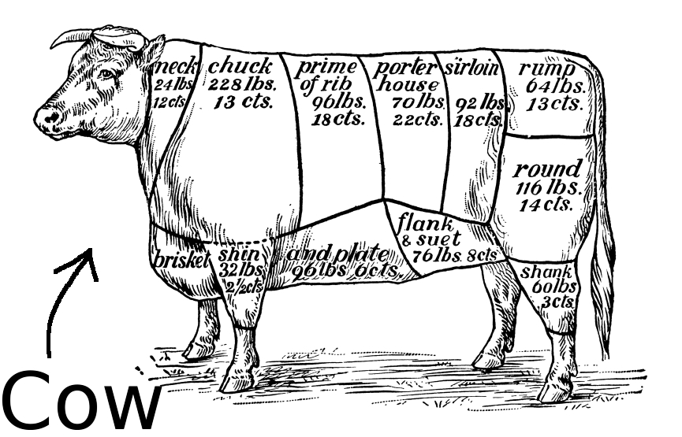
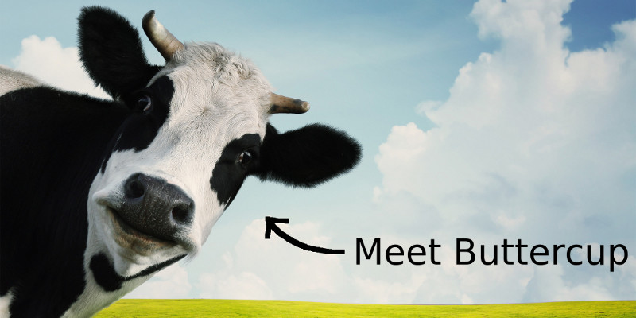
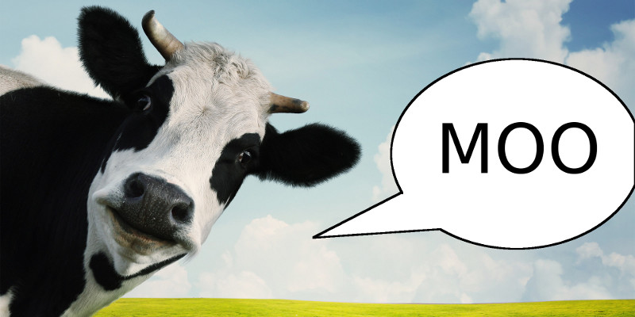

Gentle Object Oriented Programming in Python
We model the world with language.
Language includes:
- Naming types of things (cats, dogs, cows)
- Naming specific things (Garfield, Snoopy, Buttercup)
- Describing actions (run, walk, smile, love, hate)
- Attributing qualities (red, furry, hot, scary)
Nouns, proper nouns, verbs and adjectives.
Computers need to model the world too!
That's what Object Oriented Programming is for.
Basic
Concepts
A class defines a type of thing
An object is an instance of a class
A method specifies something an object does
An attribute defines the quality of an object

Crib sheet
- Class = Noun
- Object = Proper noun
- Method = Verb
- Attribute = Adjective
(This is not entirely accurate but is close enough for today)
What about Python?
Python Refresher:
def hello(name='World!'):
"""
A function to return a greeting.
"""
return 'Hello, {}'.format(name)
A function used like this:
>>> hello()
'Hello, World!'
>>> hello('PyconUK')
'Hello, PyconUK'
Python Classes
class Cow:
"""
A pythonic cow. :-)
"""
def __init__(self, name='Cow', breed=None):
"""
Called when the class is instantiated.
"""
self.name = name
self.breed = breed
def moo(self, message='MOO!'):
"""
A bovine greeting function (see previous slide).
"""
return '{} says, {}'.format(self.name, message)
Created in the file cow.py
A Herd of Pythonic Cows
>>> from cow import Cow
>>> a_cow = Cow('Buttercup', 'Friesian')
>>> a_cow.name
'Buttercup'
>>> a_cow.breed
'Friesian'
>>> a_cow.moo()
'Buttercup says, MOO!'
>>> another_cow = Cow('Daisy', 'Galloway')
>>> another_cow.name
'Daisy'
>>> another_cow.breed
'Galloway'
>>> another_cow.moo('MooOOOOooooo!')
'Daisy says, MooOOOOooooo!'
a_cow and another_cow are instances of the Cow class.
Your task...
- Create a "Parrot" class.
- You must be able to give a parrot a name and catch-phrase (e.g. "Pieces of eight...").
- Instantiate a Parrot with the name "Polly" and a catch-phrase of your choosing.
- Call Polly's "speak" method so Polly returns her catch-phrase.
- Bonus points for creativity and surprises!
{kind=link}
{kind=link}